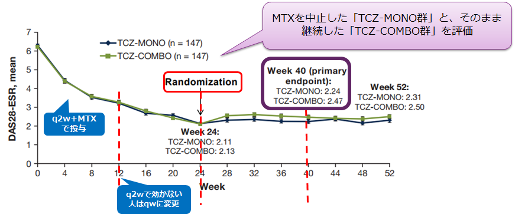

対オレンシア①高齢者
TCZ-SC+MTX併用療法で低疾患活動性を達成した患者では、MTXを中止しても疾患コントロールの維持が可能（COMP-ACT Study）
- ●TCZ-SCとMTX併用で低疾患活動性を達成した患者において、併用療法継続群に対する、MTX中止群の非劣性を検証
- ●主要評価項目：TCZ単独群とMTX併用群の24週から40週の平均ΔDAS28変化量

アクテムラ皮下注でも、
MTX中止後も継続群と同等の効果が維持できるというエビデンスが示された